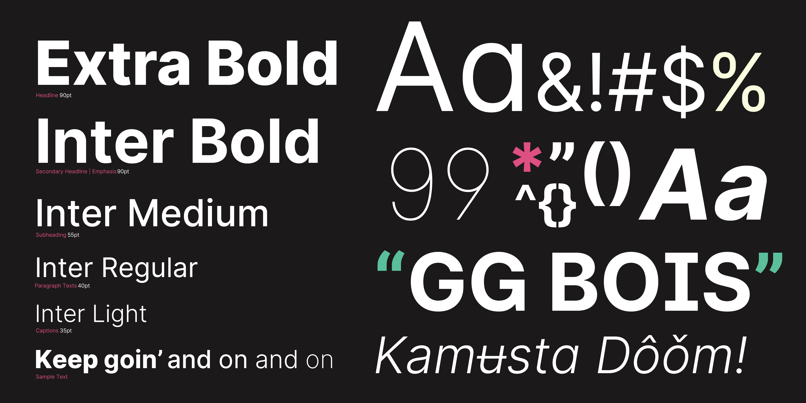
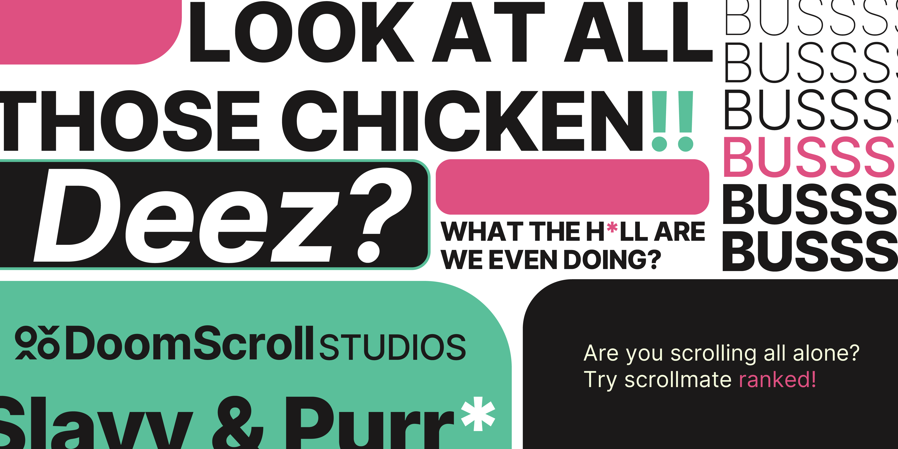
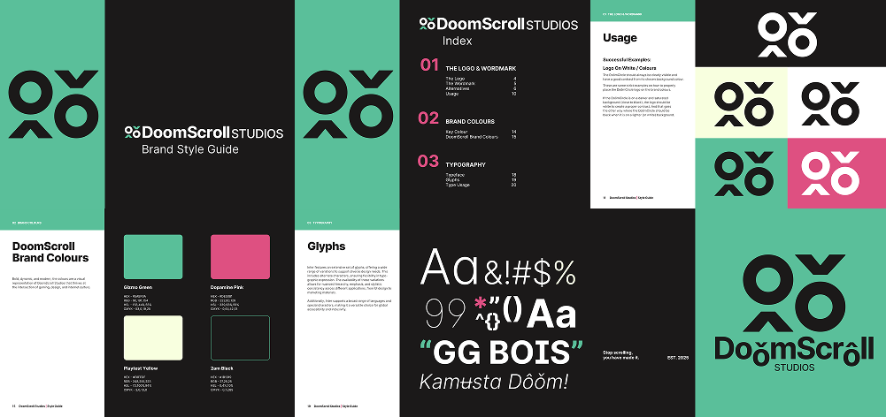

DoomScroll Studios - Rebrand
"A collective of brainrotted Gen-Z creators, harnessing the chaos of infinite scrolling to shape something greater."
Creative Director & Brand Identity Designer
I led the complete rebranding of DoomScroll Studios, crafting the visual identity from the ground up. From designing the logo to developing the color palette, typography, and style guide, I shaped the studio's aesthetic direction. This project reflects my ability to define and execute cohesive, future-forward brand systems.
Visit website:
DoomScroll Studios
Software Used:
- Adobe Illustrator
- Adobe Photoshop
- Adobe InDesign
- Adobe After Effects
- Figma
DoomScroll Studios' Mission:
"At the heart of our identity lies the concept of 'doomscrolling': an endless cycle of content that captures the fleeting attention span of the modern age.
We channel these challenges into boundless innovation and interactive experiences.”
The rebrand was inspired by the concept of "brainrotted Gen-Z creators" and the chaotic nature of infinite scrolling. I aimed to capture the essence of this digital culture while creating a visually striking and cohesive brand identity.
Overall, this project showcases my ability to create a compelling brand identity that resonates with a specific audience while maintaining a strong visual presence.
Logo Design:
DoomScroll Studios' signature logo is the up and down arrow accompanied with two circles that represent the scrolling motion of doom-scrolling in the modern media consumption.
Letter “O” with Circumflex
ô Alt + 0244
Letter “O” with Caron
ǒ U + 01D2
Typography:
Inter is DoomScroll Studios' chosen typeface for its high legibility on screens and its timeless, neutral design. Its geometric sans-serif structure ensures clarity across various platforms and devices.
With only one typeface family, the brand chose to vary its weight to differentiate types of communication. Inter's widespread availability makes it accessible for both internal and external use, maintaining consistency in branding without licensing barriers.

Why I Chose These Colors:
The DoomScroll Studios rebrand explores the contrast between the negative connotations of doomscrolling and the studio's creative identity. Rather than distancing itself from the term, the brand redefines it. Transforming a symbol of endless media consumption into one of curiosity, creativity, and game development.
To reinforce this idea, I avoided relying on conventional color psychology that would either exaggerate or completely reverse the term's meaning. Instead, the identity leans on cyan as a technology-driven, and paired with black for sophistication. A saturated pink serves as a bold accent. Together, the palette establishes a distinctive identity that feels unmistakably Gen Z without being defined by the original negative meaning of "doomscrolling."

Brand Guidelines:
In the brand guidelines, I provided a comprehensive overview of the brand's visual identity, including logo usage, color palette, typography, and other design elements. This ensures consistency across all platforms and materials, allowing the brand to maintain a strong and cohesive presence in the market.
Some key elements:
- The Logo & Wordmark
- Brand Colors
- Typography
